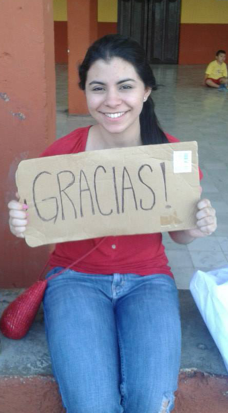

DONACIONES
Cómo institución, la Fundación Unión y Esperanza Yucateca contribuye a mejorar las condiciones de vida en las comunidades rurales de los niños menores de 15 años en el sur del Estado de Yucatán mediante diversas actividades, inculcando un sentido de autovaloración a través de momentos divertidos y llenos de alegría y contando con el apoyo de las empresas patrocinadoras del estado. Contribuimos a su correcto desarrollo humano en nuestra comunidades, así como a la formación de su carácter y autoestima ayudándonos en actividades recreativas, sociales y académicas para fomentar valores como la solidaridad, la condescendencia y el trabajo en equipo, que son importantes para establecer lazos fraternales entre la sociedad.
UNE le brinda la oportunidad para que integrarse a nuestros proyectos, especialmente, a través de sus donativos de manera económica y/o en especie, que serán destinados para la realización de actividades en las comunidades tales como reforestación de parques, festivales infantiles (navidad, día de reyes) entre otras.
Los niños de nuestras comunidades estarán agradecidos con su colaboración con tan noble causa.
Realiza un donativo y ayudanos a ayudar:
También puedes realizar tu donativo a través de la siguiente cuenta:
- TITULAR: Unión y esperanza yucateca a.c
- BANCO: Santander
- N° DE CUENTA: 22-00040805-9
- CLABE: 014910220004080597
Tambien puedes hacer tus donaciones en especie, Contáctanos
